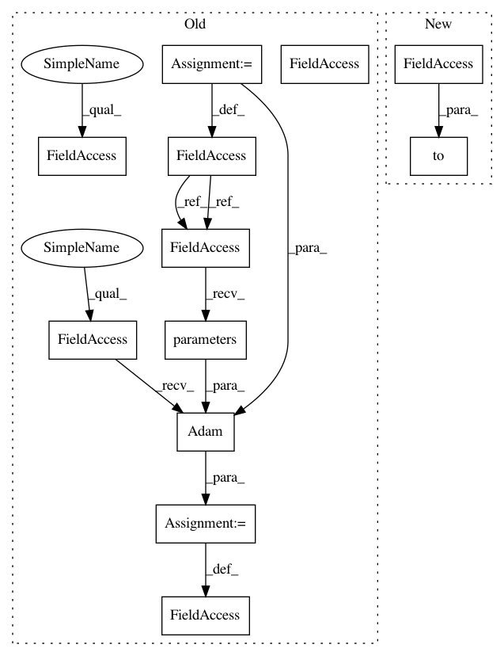

1118c16d3852beec9c0b18804d43a1fa01ef6786,examples/tgn.py,,,#,13
Before Change
time_dim=100),
aggregator_module=LastAggregator(),
embedding_module=IdentityEmbedding(memory_dim=100))
model = model.to(device)
optimizer = torch.optim.Adam(model.parameters(), lr=0.0001)
criterion = torch.nn.BCEWithLogitsLoss()
def train():
After Change
train_data, val_data, test_data = data.train_val_test_split(
val_ratio=0.15, test_ratio=0.15)
model = TGN(
data.num_nodes, data.x.size(-1), memory_dim=100, time_dim=100,
message_module=IdentityMessage(raw_msg_dim=data.x.size(-1), memory_dim=100,
time_dim=100),
aggregator_module=LastAggregator()).to(device)
class LinkPredictor(torch.nn.Module):
def __init__(self, in_channels):
In pattern: SUPERPATTERN
Frequency: 3
Non-data size: 12
Instances
Project Name: rusty1s/pytorch_geometric
Commit Name: 1118c16d3852beec9c0b18804d43a1fa01ef6786
Time: 2020-11-02
Author: matthias.fey@tu-dortmund.de
File Name: examples/tgn.py
Class Name:
Method Name:
Project Name: ecs-vlc/torchbearer
Commit Name: 0de148f6892361e61d4b68cf97814e73692f6b1a
Time: 2019-03-14
Author: mp2u16@ecs.soton.ac.uk
File Name: docs/_static/examples/gan.py
Class Name:
Method Name:
Project Name: ecs-vlc/torchbearer
Commit Name: 83e80f82d7cf5aa0444c9bdc8709304f10b8d7fc
Time: 2018-09-12
Author: mp2u16@ecs.soton.ac.uk
File Name: docs/_static/examples/gan.py
Class Name:
Method Name:
Project Name: rusty1s/pytorch_geometric
Commit Name: 1118c16d3852beec9c0b18804d43a1fa01ef6786
Time: 2020-11-02
Author: matthias.fey@tu-dortmund.de
File Name: examples/tgn.py
Class Name:
Method Name: